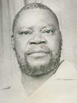

Welcome to the life of God's general!
Johane Masowe, a prominent figure in the Gospel of God Church in Zimbabwe, parallels another influential Shona prophet, Johane Marange. Born in 1914 or 1915 in Gandanzara village, Masowe underwent a transformative religious experience in 1932, leading him to adopt an itinerant preaching ministry. Arrested in 1932 for unauthorized preaching, Masowe believed he was divinely commissioned as "John the Baptist" to advocate for repentance and baptism among Africans.
Masowe's teachings emerged during colonialism's peak, addressing racial discrimination and the Great Depression's aftermath. Alongside Maranke, he pioneered the vaPostori movement, blending African Traditional Religion with Christianity. Despite colonial restrictions and multiple imprisonments, Masowe's influence expanded across Africa, with communities adopting unique practices like outdoor worship and a distinctive appearance.
His teachings critiqued both African traditional practices and Eurocentric Christianity. While not universally accepted as the Messiah, some followers equated Masowe with Christ, emphasizing his role in liberating Africans. The vaPostori's commitment to their beliefs, their pilgrimage-like movement, and their prosperity reflect their deep-rooted faith and adaptability.